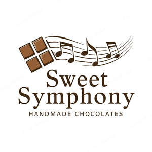
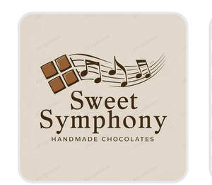
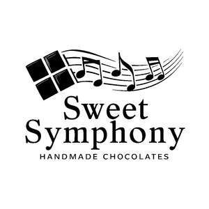

Trade Mark Journal No.2025/010 7 March 2025
UK00004157385 7 February 2025 (30)
Mark 1

Mark 2

Mark 3

Sweet Symphony Handmade Chocolates
- Class 30
- Chocolate; Chocolate truffles; Chocolate fudge; Chocolate brownies; Chocolate marzipan; Chocolate confectionery; Chocolate sweets; Chocolate candies; Chocolate confectionary; Chocolate cake; Chocolate caramel wafers; Milk chocolate; Chocolate coffee; Chocolate confections; Chocolate biscuits; Chocolate desserts; Chocolate fondue; Chocolate cakes; Dairy-free chocolate; Chocolate waffles; Chocolate pastries; Chocolate syrup; Milk chocolate teacakes; Chocolate chips; Chocolate wafers; Milk chocolate bars; Dairy chocolate; Chocolate bars; Chocolate creams; Hot chocolate; Chocolate flavoured confectionery; Chocolate bunnies; Chocolate sauce; Mousses (Chocolate -); Chocolate mousses; Chocolate for confectionery and bread; Chocolate eggs; Chocolate syrups; Shortbread with a chocolate coating; Chocolate beverages; Chocolate powder; Chocolate vermicelli; Chocolate flavourings; Chocolate coated biscuits; Chocolate candy with fillings; Deep chocolate cake made with chocolate sponge; Chocolate sauces; Chocolate coating; Drinking chocolate; Chocolate for toppings; Chocolate confectionery having a praline flavour; Chocolate covered biscuits; Pralines made of chocolate; Chocolate confectionery containing pralines; Chocolate coated nougat bars; Shortbread with a chocolate flavoured coating; Chocolate topping; Chocolate with alcohol; Chocolate beverages with milk; Vegan hot chocolate; Chocolate coated marshmallow biscuits containing toffee; Almonds covered in chocolate; Drinks flavoured with chocolate; Chocolate topped pretzels; Chocolate drink preparations flavoured with toffee; Chocolate covered pretzels; Chocolate covered cakes; Chocolate flavoured beverages; Waffles with a chocolate coating; Chocolate drink preparations flavoured with mocha; Aerated chocolate; Non-medicated chocolate confectionery; Candy with cocoa; Chocolate shells; Chocolate flavoured coatings; Chocolate covered wafer biscuits; Ice creams flavoured with chocolate; Chocolate coated fruits; Chocolate coated nuts; Filled chocolate; Chocolate confectionery products; Confectionery chocolate products; Aerated drinks [with coffee, cocoa or chocolate base]; Non-medicated chocolate; Imitation chocolate; Substitutes (Chocolate -); Sweets (Non-medicated -) in the nature of chocolate eclairs; Milk chocolates; Chocolates; Chocolate syrups for the preparation of chocolate based beverages; Chocolate pastes; Chocolate drink preparations flavoured with banana; Aerated beverages [with coffee, cocoa or chocolate base]; Shortbread part coated with chocolate; Confectionery items coated with chocolate; Chocolate coated macadamia nuts; Chocolate extracts; Chocolate spread; Chocolate spreads; Hot chocolate mixes; Chocolate drink preparations flavoured with nuts; Chocolate decorations for cakes; Chocolate drink preparations flavoured with mint; Liqueur chocolates; Biscuits having a chocolate flavoured coating; Chocolate drink preparations flavoured with orange; Chocolate-coated sugar confectionery; Non-medicated flour confectionery coated with chocolate; Biscuits having a chocolate coating; Beverages with a chocolate base; Filled chocolate bars; Half covered chocolate biscuits; Chocolate drink preparations; Truffles (rum -) [confectionery]; Candy with caramel; Cocoa; Ice beverages with a chocolate base; Beverages made with chocolate; Beverages made from chocolate; Chocolate beverages containing milk; Drinks containing chocolate; Chocolate based drinks; Truffles [confectionery]; Ice creams containing chocolate; Shortbread part coated with a chocolate flavoured coating; Turkish delight coated in chocolate; Biscuits containing chocolate flavoured ingredients; Non-medicated flour confectionery coated with imitation chocolate; Marshmallow filled chocolates; Chocolates in the form of pralines; Almond confectionery; Chocolate decorations for confectionery items; Beverages containing chocolate; Non-medicated confectionery containing chocolate; Confectionery items formed from chocolate; Drinks prepared from chocolate; Chocolate with Japanese horseradish; Chocolate fillings for bakery products.
Andrzej Czuper